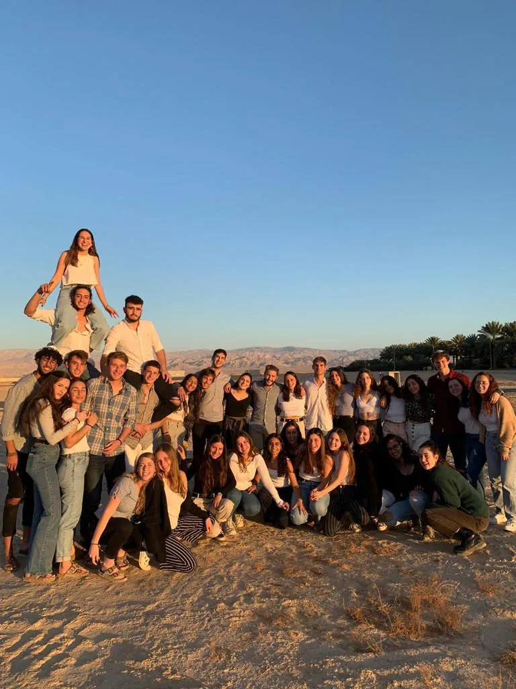
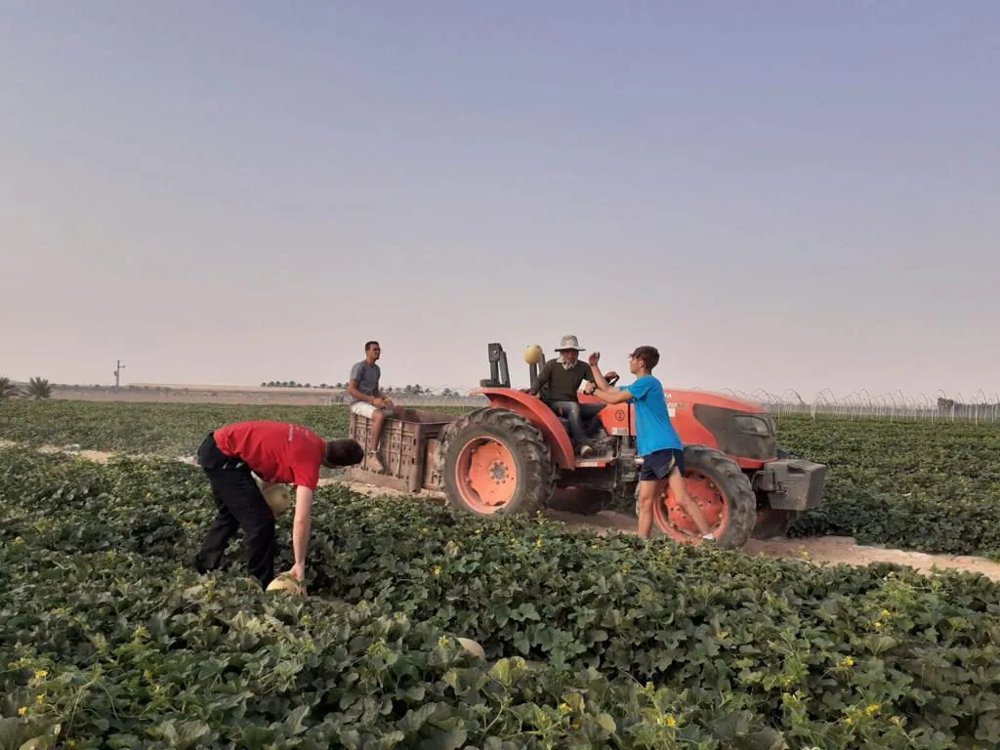
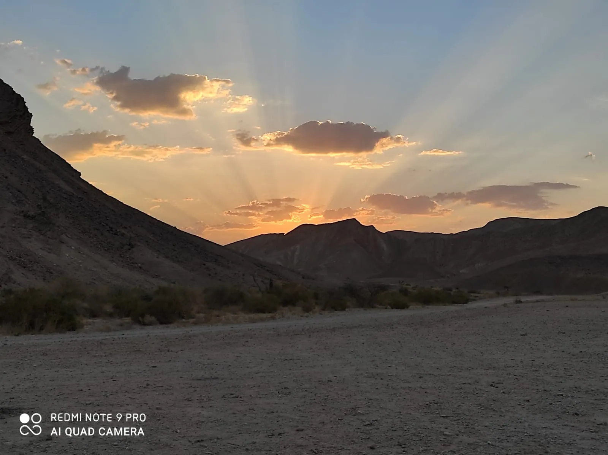
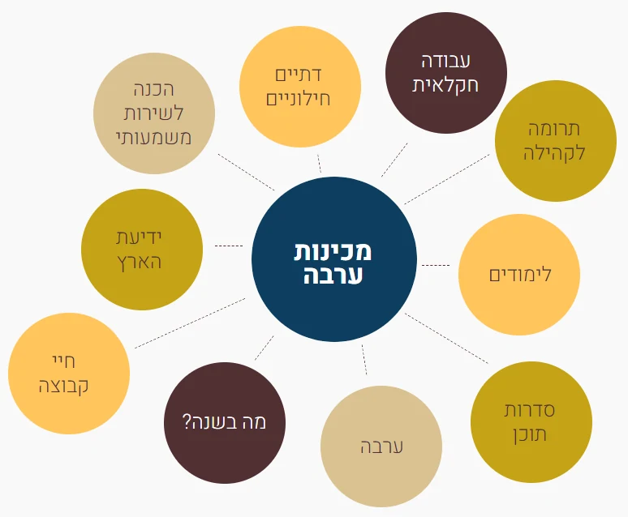
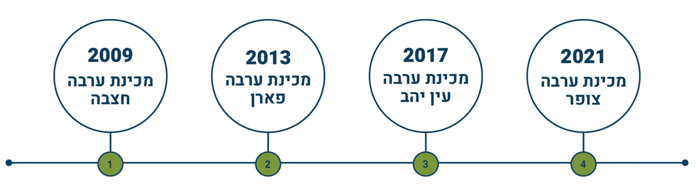

מכינות ערבה
"ערבה: מכינה ישראלית למנהיגות חברתית"
מנהיגות צעירה וערכית
"ערבה: מכינה ישראלית למנהיגות חברתית" תכשיר ותפתח מנהיגות צעירה וערכית למרחבי העשייה השונים במדינת ישראל. מנהיגות שיונקת את כוחה מהקשר לארץ ישראל, לעם ישראל ולמקורותיו ההיסטוריים. מנהיגות בעלת מוסר חברתי ורגישות אנושית, שראשיתה בדוגמה אישית, בחזקת "נאה דורש נאה מקיים".
המכינה תחנך לאור ערכי היהדות והציונות: לחיי שליחות ותרומה למדינה ולקהילה, לערך עבודת האדמה ושמירת הסביבה, לשירות צבאי מלא ומשמעותי, להומניזם, לשוויון ולכבוד לאחר. המכינה פתוחה לכל תלמידי כיתות י"ב שמעוניינים לדחות את שירותם הצבאי בשנה, כדי לגבש, לכוון ולבסס את המשך מסלול חייהם.
המכינה תפעל להשתלב במרקם החיים בכל יישובי הערבה התיכונה, ולהיות גורם משפיע ומחזק במערכת החינוכית והחברתית שבה.


ארבעה מוקדים, שנה אחת משנה חיים
מכינות ערבה פועלות ב-4 מוקדי פעילות מקבילים: חצבה, פארן, עין יהב וצופר. כל מכינה פועלת כקבוצה נפרדת ועוברת את השנה באופן עצמאי.
שנת המכינה מיועדת לבוגרי ובוגרות י"ב. היא נפתחת בסוף אוגוסט ומסתיימת בסוף יוני, בסך הכול כ-42–44 שבועות. השנה מורכבת מ"שבועות שגרה" ו"שבועות חוץ" (סדרות).
שבועות השגרה כוללים לימודים עיוניים בנושאים רבים ומגוונים, התנדבות קבועה בערבה ובדרום הארץ יום אחד בשבוע, אימוני כושר, משפחות מאמצות ממושבי הערבה ופעילויות קבוצתיות. השבתות במכינה, כל שבת שנייה, מתאפיינות באווירה מיוחדת ובזמן של מנוחה ועיבוד.
שבועות החוץ נועדו לפתח מבט רחב על החברה הישראלית ולרכוש כלים ומיומנויות שלא ניתן לרכוש בשגרה: טיולים להכרת הארץ, סדרות ניווט ושטח, סדרות חברתיות ופרויקטים של תרומה לקהילה.

יסודות המכינה
לימודים
"אמור לי ואשכח, למד אותי ואזכור, שתף אותי ואלמד" (בנג'מין פרנקלין)
הלימוד במכינה הוא ערך מרכזי, מתוך ההכרה שחיי עשייה משמעותיים מתחילים בבירור פנימי ובחקר השאלות האישיות והכלליות. הלימודים ממלאים את רוב זמן השבוע: כ-15 שיעורים שבועיים (קורסים) ביהדות, ציונות, חברה בישראל, הכנה לצה"ל, היסטוריה יהודית, פילוסופיה, ביבליותרפיה, כלכלה וחברה, מנהיגות ועוד. שני עקרונות מנחים אותנו: הראשון, ללמוד את מה שחשוב לדעת כאדם, יהודי, ישראלי וציוני שחי בארץ הזו ורוצה להשפיע עליה לטובה. השני, ללמוד מתוך אהבה ותחושת שייכות, ולעבור מעמדת התלמיד ששונן חומר לבגרות לעמדה של אדם בוגר שרוצה לדעת ולהעמיק.
אנו שואפים להקנות ידע ועומק מחשבתי, לפתח יכולות למידה עצמאיות וצימאון לידע, וליצור חוויית לימוד דיאלוגית שבה החניכים לוקחים חלק פעיל. הלימודים אינם לצורך תעודה. אלה לימודים "לשמה", שתכליתם "הגדלת האדם". אחד הביטויים הבולטים לכך הוא שיעורי חניך, שמועברים מדי שבוע על ידי חניכי המכינה.
שיעור נמשך כשעה וחצי, וסגל המורים המגוון מגיע מקרוב ומרחוק: הערבה התיכונה, ירוחם, ירושלים, תל אביב, ואפילו זכרון יעקב ורמת הגולן.
תרומה לקהילה
"גדול תלמוד המביא לידי מעשה" (קידושין מ ע"ב)
תחום התרומה לקהילה הוא מהחשובים בשנת המכינה. החניכים מתנדבים יום עד יום וחצי בשבוע במסגרות שונות בערבה, בבאר שבע, בירוחם, בדימונה ובאילת, בקבוצות של 3–10 חניכים: עם ילדים ומבוגרים עם צרכים מיוחדים, נוער בסיכון, בתי ספר, מועדוניות נוער, קשישים, חונכויות לילדים ועוד.
חלק משמעותי מהמאמץ מופנה פנימה, לצרכים בערבה: עבודה בבית הספר, חונכויות, הדרכת כיתות נמוכות, חוגים לילדים, גיל שלישי ועוד. מעבר להתנדבויות הקבועות יש פרויקטים חד-פעמיים: ניקוי וצביעת דירות של נזקקים בדימונה לקראת פסח, יריד פסח, סדר ט"ו בשבט וקריאת מגילה לקהל הרחב, סיוע לחקלאים שנתקעו ללא ידיים עובדות, קטיף ירקות לתרומה ועוד.
בכל מקום התנדבות קבוע יש חניכה וליווי מקצועי ורגשי, והשנה נפתחת בקורס "מבוא למעורבות חברתית". הבחירה להתנדב נובעת משלוש סיבות: פיתוח רגישות חברתית דרך נתינה, סיוע לאלה שזקוקים לכתף, וחיבור לאוכלוסיות שחיות סביבנו, ובפרט לקהילות הערבה.
עבודה חקלאית
"עבודת האדמה היא נחמת הארץ, גאולת ישראל... תחילת גלותנו הייתה בחומר ובלבנים ובכל עבודה בשדה, ותחילת גאולתנו היא בחומר ובלבנים ובכל עבודה בשדה" (הרב צ.ה. קלישר)
שנים רבות חלפו מאז כתבו א.ד. גורדון והרב קלישר את דבריהם, ונראה שקולם עדיין מהדהד. בדורנו העבודה הפיזית והיצרנית, ובפרט החקלאית, ניתנה ל"ידיים זרות" ובשכר נמוך. ההתרחקות מעבודת האדמה ומעבודות הכפיים היא סכנה חינוכית וחברתית ברמה הלאומית. העבודה החקלאית מעניקה הזדמנות מצוינת לבניין האישיות, מעמיקה את השורשים ומחזקת את תחושת השייכות.
העבודה החקלאית משתנה ממכינה למכינה: יש מכינות עם בוקר קבוע בשבוע בחקלאות, ויש כאלה שמרכזות שבועות עבודה. החניכים עובדים אצל חקלאי המושב, שמלווים וחונכים אותם. בכל מכינה יש גם "חממת הבית" לגידול ירקות למטבח, וחניכי חצבה ועין יהב משולבים באופן קבוע בפעילות חוות בין השיטין.
דתיים וחילוניים
אחד המאפיינים הייחודיים של המכינה הוא הרכב החניכים: דתיים, חילוניים וכל הגוונים שביניהם, ביחס ממוצע של רבע דתיים, רבע מסורתיים וחצי חילוניים. הבחירה בדרך המשלבת היא גם "לכתחילה" וגם "בדיעבד". "לכתחילה": יש כאן רצון להצמיח אמת גדולה דווקא מתוך המפגש בין הקולות השונים בחברה הישראלית, ולהפוך את גורל החיים המשותפים ליעוד משותף. "בדיעבד": השילוב הדתי-חילוני יוצא נגד תהליכי ההקצנה, ההסתגרות והניכור, והמסגרות המעורבות הן גשר הכרחי בין המגזרים.
החיים המשותפים במכינה אינם מבקשים לייצר "אורח חיים ממוצע". הם מבקשים מכל אחד לחיות לפי אמונתו, ולראות באחר, שחי אחרת ממנו, שותף ל"מסע היהודי-ישראלי".
הכנה לשירות משמעותי
אנו מקדישים תשומת לב ממוקדת להכנה לשירות משמעותי, לפיקוד ולקצונה: 3 אימוני כושר בשבוע, יום הכנה לגיבושים (במודל יום סיירות) ומירוצים לאורך השנה. לצד ההכנה הפיזית יש שיעור שבועי עיוני: הקוד האתי של צה"ל, מורשת קרב, תורת הלחימה, דילמות פיקודיות ועוד. אנחנו מבקרים בבסיסים ופוגשים בוגרים ומפקדים.
אנו גאים בכך שרבים מבוגרינו בוחרים במסלול הפיקודי, ו-כ-35% מהם קצינים וקצינות, פי 4 מהשיעור באוכלוסייה הכללית המתגייסת. תכנית האימון והתכנים העיוניים מלווים על ידי מכון וינגייט ומשרד הביטחון.
ידיעת הארץ
"אין אהבת הארץ בלא ידיעת הארץ ואין ידיעת הארץ בלא מגע בלתי אמצעי איתה..." (התנועה המאוחדת)
במהלך השנה אנו מטיילים בכל חבלי הארץ, מהדרום ועד הצפון, במסעות נודדים: רוב הציוד על הגב, לינה תחת כיפת השמיים ותפריט פשוט וטוב. בטיולים משולבות הדרכות של החניכים ומפגשים עם דמויות מפתח באזור. יש גם שבוע ניווטים ושבוע שטח מתקדם (הישרדות). בסיום השנה יוצאים ל"מסע חובק ישראל", מסע רצוף של 3 שבועות שנע בין השטח הפתוח למרחב העירוני וכולל מפגשים רבים ומגוונים.
חיי קבוצה
"בטרם אתא הליל, בואו, בואו הכל! מאמץ מאוחד, עקשני וער של אלף זרועות, האומנם יבצר לגול את האבן מפי הבאר?" (רחל)
"הקבוצה" היא המסגרת שעוטפת את כל פעילויות השנה. החניכים חיים במתחם המכינה ומקיימים אותו בעצמם: מבשלים, מנקים, עושים תורנויות, מקיימים אסיפה שבועית, גרים בדירות משותפות ומפעילים ועדות ופרויקטים.
האמירה הברורה לכל חניך שהוא "אינו לבד בעולם", שעליו להתחשב באחר ולכבד דעות שונות משלו, היא מהמסרים הפשוטים והעמוקים ביותר של השנה. קבוצה הטרוגנית שחיה יחד באינטנסיביות מעמידה כל אחד במבחן יומיומי של התחשבות, פתיחות וסובלנות. הצוות מלווה את הקבוצה ומוודא שהיא מאפשרת תהליך חינוכי בריא, שנותן מקום גם לכל פרט.
סדרות תוכן
טיולים: טיול סוכות (3 ימים, בדרך כלל בצפון), טיול חנוכה (3 ימים בנגב או בהרי אילת), ו"חובק ישראל", מסע של שלושה שבועות רצופים לקראת סוף השנה.
סדרות שטח: שבוע ניווטים בגבעות גורל (אוקטובר–נובמבר) וסדרת הישרדות (ינואר–פברואר), 5 ימים כל אחת.
סדרות חברתיות: זהות בדויה / סדרת שבטים להכרת החברה הישראלית לגווניה; סדרת דרום (ערי הפיתוח, המגזר הבדואי, עוטף עזה); חזון לאומי, שבה כל חוליה חוקרת סוגיה ישראלית ומציגה אותה; סדרת יהודה ושומרון; וסדרת תל אביב–ירושלים, על פערי התרבויות ושאלות היסוד.
ועוד: סדרות חקלאות, פרויקטים של תרומה לקהילה, ושבוע אמצע לבחינת המטרות ולהצבת מטרות חדשות.
ערבה
"אף מגדל דבורים לא ישים כאן את כוורותיו, אבל בני האדם לפעמים עושים דבש מן השממה, והוא מתוק מכל" (יהודה עמיחי)
כשמבקשים מחניכים בסוף השנה להגדיר במילה אחת את מה שעברו, יש מילה אחת שתמיד עולה: ערבה! הערבה היא הרקע לשנה כולה: המדבר, השקט, החממות, החלוציות וההתיישבות, האנשים, חום הקיץ וקור החורף.
לכל זוג חניכים יש משפחה מאמצת מהמושב, החניכים מתנדבים עם ילדי המושב ושותפים בהכנת החגים, ותושבים מגיעים למכינה לשיעורים, לקבלות שבת ולפעילויות. ולבסוף, הערבה היא גם יעד לחזרת הבוגרים, להתיישבות עתידית.
ציר התפתחות מכינות ערבה



רוצים להצטרף למכינה?
השאירו פרטים, עם שם מלא ומספר תעודת זהות, ונחזור אליכם.